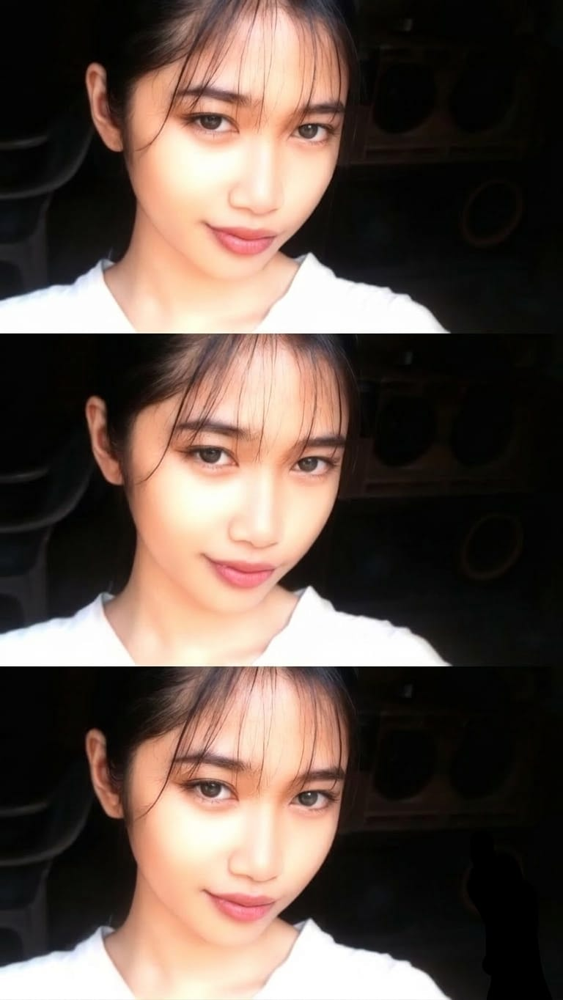

klik di mana saja

"besok jangan lupa makan ya"
"aku sayang kamu juga"
"kamu gak sendirian"
"hati-hati ya"
"kamu gak lebay"
"istirahat dulu"
FINAL CHAPTER — IF YOU EVER MISS ME
"aku masih sayang kamu."